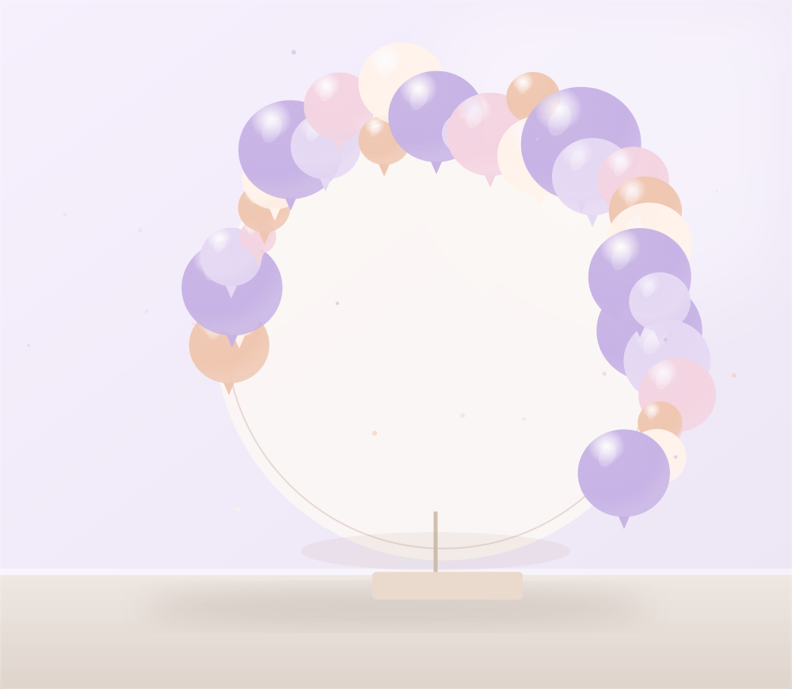
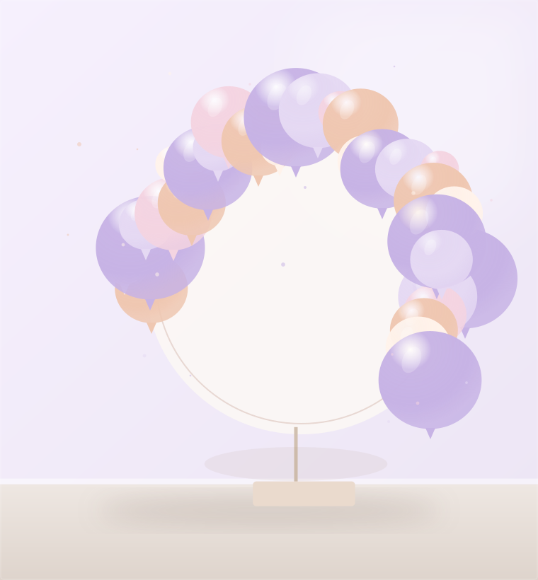

Большие праздники — большие эмоции
Сделаем красиво.
Сделаем вашим.
Праздничные гирлянды, арки и фотозоны из воздушных шаров для камерных и больших событий. Начнём с вашей идеи и палитры.
Обсудить оформление
Декор и фотозоны
Настроение в каждой
детали.
Не бывает двух одинаковых праздников, поэтому каждый вариант оформления собирается под вашу историю.
Рассказать о празднике
Лёгкая архитектура
Арки и гирлянды
Зона входа, фон для фотографий и композиции для семейного праздника.

Кадры, которые останутся
Фотозоны
Фон, палитра и объем — единая история для ваших снимков.

Волшебство в деталях
Детские праздники
Оформление любимого события без необходимости придумывать всё самостоятельно.